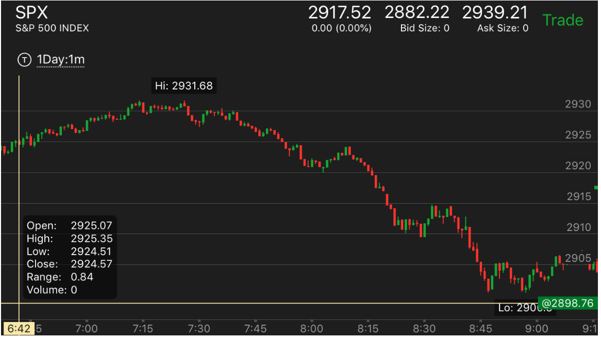
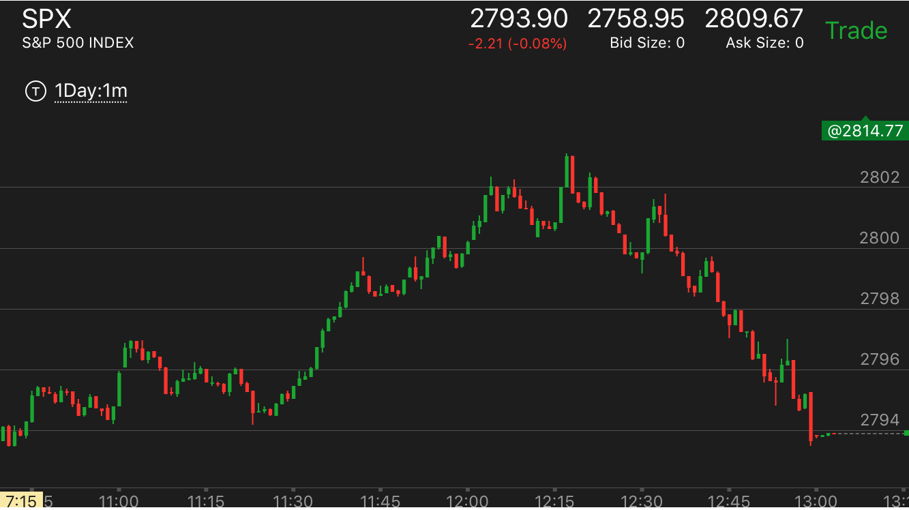

确定的走势：顶部和底部的形状
- 如果下跌的时候，出现了走平，那么这个常常不是底部。走平应该看作是拖延时间，
把时间加长，显得整体比较慢。它可能冲高后填补真空大跌。或者直接下跌
- 如果下跌的时候，立刻反弹，那么要看反弹的幅度和速度。它可能是一个双底，但也可能是填补真空后，大跌
快速下跌后，走平，不是底部
顶部下跌很快，但是依靠相对运动建立顶部
走势走平的时候，依赖相对运动来建立转折点
走势走平的时候，依赖相对运动来建立转折点
TOP

图示:10:10在底部走平后，它的下跌速度超过了上涨速度。这样就表示转势了。
而12：00在经过一段上涨后，它的上涨速度超过了下跌速度。这样也表示转势了。
这个两个走势的转折都是发生在它们的走平的状态的时候。走势的转折悄悄的完成了。
快速下跌后，走平，不是底部
TOP

图示:8:00和8:20都是下跌后，走平，然后冲高下跌的。说明下跌后，立刻走平
一般不是一个底部。立刻反弹则要看它的时机和形状。8：45立刻反弹。幅度不大，再次回来。
而且已经跌了很久了。这样就是一个底部了。

图示:2：40开始的下跌，不断的出现了下跌，走平，跳起来再次下跌的走势。
这样说明了走平不是一个底部的特征。而末尾跳起来也不是。另外它前面都填补了真空。说明要持续下跌。
顶部下跌很快，但是依靠相对运动建立顶部
TOP

图示:12：15快速冲高，然后下来也很快。但是立刻反弹。从相对速度看，
它会跌的更厉害。12：30的快速反弹，也证明了它会下跌。

图示：7:20冲高速度很快，比下跌速度更快。这样就已经表面会下跌了。
7：30出现了冲高后没有回调，继续冲高的走势。7：31冲高，然后下来一点，走平。这样它的速度远远低于
上涨的速度。这个就是顶部了。

图示：8：05它开始反弹，加速冲高，出现新高。
下跌的速度很慢。这样就是一个顶部的走势了。

图示：
1. 11：00出现加速大涨后，快速回调，回调幅度很大。这个说明会继续涨
应该做多。它继续大涨，创新高后，开始缓慢下跌。这个要做对比。要想到这个是市场让你看到它的情况。
2. 它第二个山峰回调速度明显低于前面。
而且只回调了2个点后，在11：10开始走平震荡。和前面一下回调4个点相比，显得很强。然而这个反而是要大跌的样子。我会被诱惑在这个地方做多，因为根据前面的经验。
它会继续大涨。结果暴跌。同时这两个连续新高，间隔时间很短。其实是一种加速走势，形成跌势。

图示：9：25冲高后，下跌速度很慢。但是它下跌的时候，出现了三段下跌。
这样就是一个底部。9:45出现了反弹。但它反弹的速度超过下跌。所以没有反弹超过高点，就开始继续下跌。

图示：9：50快速冲高，它在经过长期上涨后，这样是一个加速上涨，关键是它是否是最后一击。还是说还有更高。
它在顶部出现走平。开始下跌的时候，非常缓慢，一分钟才跌了1个点。而且刚刚下跌很少，就在阻力点2588反弹让前面如果在2588做空的人很着急。因为它是一下冲上来的。
如果有人在前面高点做空，会被套牢。这时更加着急。因为它稍微回调就开始似乎大涨了。会让这些人割肉。然后大跌。

图示： 11:30达到顶部后，下跌速度很慢。所以会跌。11：40快速下跌。
它反弹。由于处于跌势，它超过了下跌点就开始大跌了。12：20下跌的时候，分成两段。这样显得比较慢。会大跌。

图示：从8：40开始，它一路上涨，中间只有走平，但是没有回调，可见一个主要走势，不能
去做它的回调来赚钱，而是要紧紧拿住。到了9：15.它走平后上涨，出现两个峰，一个峰，立刻回调比较大，
第二个峰更高，回调很小。属于加速。这样到了顶点。

图示：经过长时间缓慢上涨后，它在11：45 大幅冲高，没有明显的回调，12：10的回调也很小。不够回调的样子。
这个似乎是长时间的缓慢上涨的加速。但是它的头部还是形状不对。12：30再次冲高，走平，然后稍微走低一点，再次走平。这样就是典型的跌势了。这个必然大跌。

图示：不断走高。到了9：45它冲高后，速度超过了下跌速度。
而9：50下跌的开始速度很快。但是只有一浪，就开始长时间走平了。这样平均来看，下跌就很慢。
这样就是要跌。
图示：12：15到了高点后，立刻下跌，但是它的下跌速度明显低于上涨速度。
为了避免它是回调，可以等它出现了更低点后，做空。它在12：30反弹后，和高点只差一个点，这时已经距离高点15分钟了。所以其实在高点
附近停留已经很多时间了，是另外一种方式的缓慢下跌。